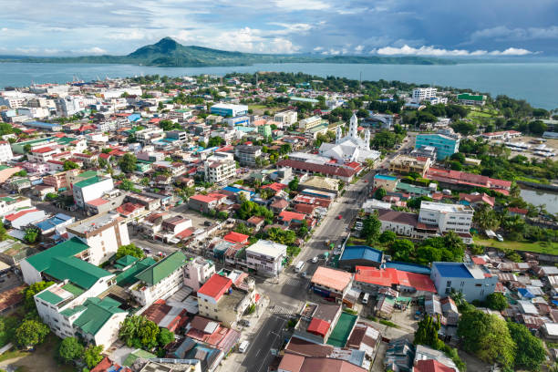
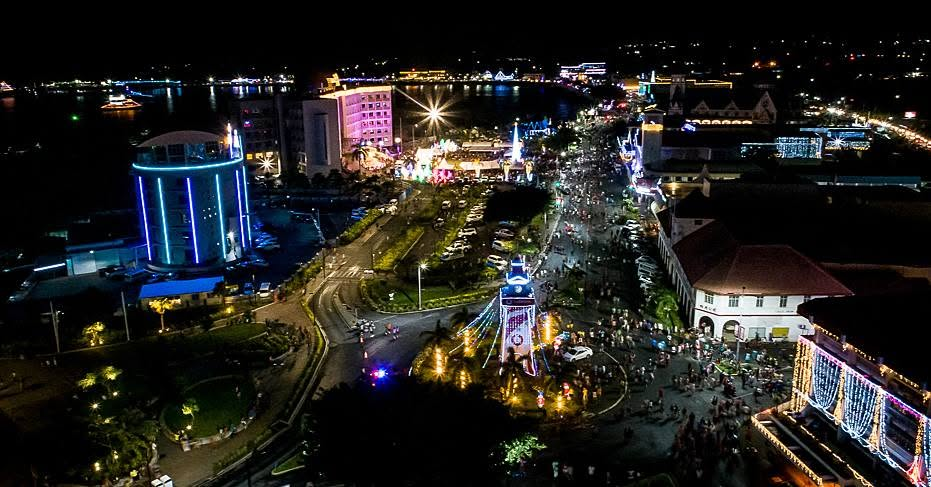

Stop 1: Apia
Apia is the capital city of Samoa. It is known for its waterfront, markets, shops, and cultural attractions. Visitors can experience Samoan food, local crafts, and everyday life in the city.


A Photo Tour of the Beautiful Islands of Samoa
Apia is the capital city of Samoa. It is known for its waterfront, markets, shops, and cultural attractions. Visitors can experience Samoan food, local crafts, and everyday life in the city.

